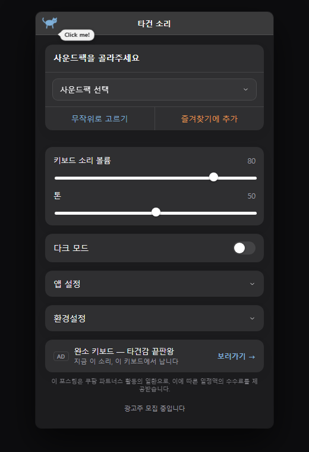

노트북으로도 도각도각 소리나게 할 수 있다고?
어떤 앱에서 타이핑해도
기계식 키보드 소리가 나요
Windows 트레이에 상주하는 무료 앱이에요. 12가지 사운드팩 중에서 골라 지금 쓰는 키보드에 원하는 타건음을 입혀보세요.
다운로드 (Windows)
눌러서 소리 들어보기 — 고른 뒤엔 아무 키나 타이핑해보세요
어디서든 재생
다른 프로그램 쓰는 중에도 계속 소리가 나요.
설치하고 끝
트레이에 상주하는 가벼운 무료 앱.
단축키 지원
Ctrl+Alt+K로 언제든 설정 창을 열어요.
